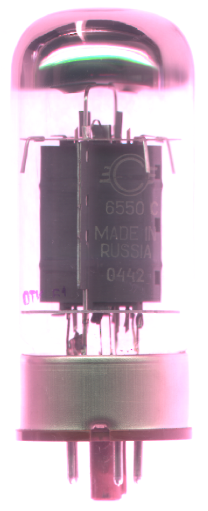
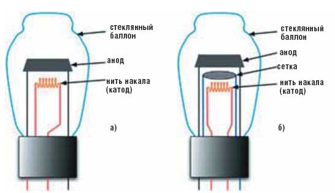
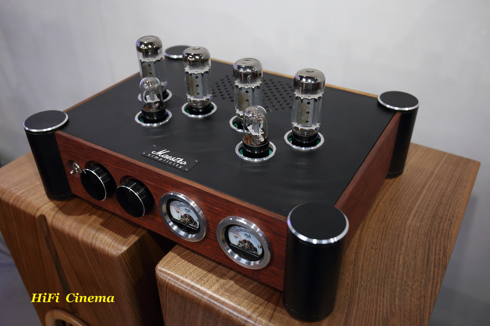

БЛОГ ВЛАДИМИРА КОЛЕСНИЧЕНКО
Охранно-пожарная автоматика и охранное видеонаблюдение
Радио-технологические штучки и мистер Никола Тесла
Цифровая обработка сигналов DSP, и радиосистемы

Электронная лампа, радиолампа - ваккумный электронный прибор, работающий за счет управления интенсвностью потока электронов, движушихся в вакуме или разреженном газе между электродами.

Радиолампы массово использовались в XX веке как активные элементы
электронной аппаратуры (усилители, генераторы, детекторы
переключатели и т.п). В настоящее время практически полностью вытеснены
полупроводниковыми приборами. Иногда еше применяются в
мощных высокочастотных передатчиках и высококлассной аудиотехнике.
Электронные лампы, предназначенные для освещения (лампф-вспышки,
ксеноновые лампы, ртутные и натриевые лампы), радиолампами
не называются и обычно относятся к класу осветительных приборов
Электронно-лучевые приборы основаны на тех же принципах, что и
радиолампы, но, помимо управления интенсивностью электронного
потока, также управляют распределением электронов в пространстве и
потому выделяются в отдельную группу. Также отдельно выделяют
СВЧ электровакуммные приборы с использованием резонансных явлений в
электронном потоке (такие как магнетрон).
Принцип действия
Вакуумные электронные лампы с подогреваемым катодом
- В результате термоэлектронной эмиссии электроны покидают поверхность катода
- Под воздействием разности потенциалом между анодом (+) и катодом (-) электроны достигают анода и образуют анодный ток во внешней цепи
- С помошью дополнительных электродов (сеток) осуществляется управление электронным потоком путем подачи на эти электроды электрического потенциала
В вакуумных электронных лампах наличие газа ухудшает работу лампы.
Газоразрядные электронные лампы
Основным для этого класса устройств является поток ионов в газе,
наполняющем лампу. Поток может быть создан, как и в
вакуумных устройствах, термоэлектронной эмиссией, а может
создаватя разрядом в разреженном газе за счёт напряженности
электрического поля. Как правило такие лампы используются либо в
низкочастотных генераторах (тиратронах), либо в схемах
управляемых выпрямителей, часто с высокими выходными токами (игнитрон).
Типы газоразрядных электронных ламп:
- неоновая лампа
- стабилитрон
- ионный разрядник
- тиратрон
- игнитрон
Неоновая лампа
Неонавая лампа - газосветный прибор тлеющего разряда, состоящая
из стеклянного балонна, в котором располагается два
электрода (катод и анод). Баллон наполнен инертным газом (неоном)
при небольшом давлении. Электроды изготавливаются из
неактивированного металла, например никеля, и могут быть
различной формы (два цилиндрических, два плоских идр.)
Стабилитрон
Газоразрядный стабилитрон представляет собой стеклянный баллон, в котором находятся два электрода - катод и анод. Катод имеет форму цилиндра с большой поверхностью, анод - стержень, расположенный вдоль оси катода. Внутренняя поверхность катода активируется. Баллон наполняется аргоном, неоном или смесью газов при давлении в несколько десятков миллиметров ртутного столба. Благодаря большой поверхности катода, напряжение между электродами при значительных изменениях тока остается неизменным.
Стабилитрон с тлеющим разрядом
Кроме стабилитрона с тлеющим разрядом, описанных выше, сушествует стабилитроны с коронным разрядом. Устройство данных стабилитронов схоже со стабилитронами тлеющего разряда. Баллон наполняется водородом при низком давлении. Стабилитроны с коронным разрядом имеют в несколько раз более высокие значения напряжения горения, и позволяют стабилизировать напряжение порядка 300-1000 В и более. Однако ток, проходящий через такой стабилитрон в сотни раз меньше чем у стабилитронов с тлеющим разрядом
История
В 1883 году Эдисон пытался увеличить срок службы осветительной лампы с угольной нитью накаливания в вакумированной стеклянной колбы. С этой целью в одном он ввел в вакумное пространство лампы пластину с проводником выведенным наружу. При экспериментах он заметил что вакуум проводит ток, причем только в направлении от электрода к накаленной нити и только тогда, когда нить накалена. Это было неожиданно для того времени - считалось, что вакуум не может повредить ток, так в нем носителей заряда. Изобретатель не понял тогда значение этого открытия, но на всякий случай запатентовал.
Благодаря этим экспериментам Эдисон стал автором фундаментального научного открытия, которое является основной работой всех электронных ламп и всей электроники до создания полупроводниковых приборов. Вследствии это явление получило название термоэлектронная эмисия.
В 1905 году этот еффект Эдисона стал основной британского патента Джона Флеминга на прибор для преобразования переменного тока в постоянный - первую электронную лампу, открывшую век электроники
В 1906 году американский инженер Ли де Форест ввёл в лампу третий электрод — управляющую сетку (и, таким образом, создал триод). Такая лампа могла уже работать в качестве усилителя тока, а в 1913 году на её основе был создан автогенератор. В 1921 году А. А. Чернышёвым[5][6] предложена конструкция цилиндрического подогревного катода (катода косвенного накала).
Вакуумные электронные лампы стали элементной базой компьютеров первого поколения. Главным недостатком электронных ламп было то, что устройства на их основе были довольно громоздкими, а при большом количестве ламп, например, в первых ЭВМ, частые единичные выгорания приводили к значительному простою на ремонт. Причем в логических схемах не всегда можно было вовремя обнаружить поломку, машина могла продолжать работать выдавая ошибочные результаты. Для питания ламп необходимо было подводить дополнительную энергию для нагрева катода (именно он испускает электроны, необходимые для тока в лампе), а образованное ими тепло отводить. Например, в первых компьютерах использовались тысячи ламп, которые размещались в металлических шкафах и занимали много места. Весила такая машина десятки тонн. Для её работы требовалась электростанция. Для охлаждения машины использовали мощные вентиляторы в связи с выделением лампами огромного количества тепла.
Пик расцвета («золотая эра») ламповой схемотехники пришёлся на 1935—1950 годы.
Конструкция
Электронные лампы имеют два и более электродов : катод, анод , и сетки. 
Катод
Для того, чтобы обеспечить эмиссию электронов с катода, его дополнительно подогревают, откуда произошло жаргоное название катода - "накал лампы".
Типы катодов
По способу подогрева катоды подразделяются на катоды прямого и косвеного накала.
-
Катод косвенного накала - представляет собой нить из металла с высоким удельным электрическим сопротивлением. Ток
накала проходит непоследтвенно через катод. Лампы прямого накала потребляют меньшую мощность, быстрее разогреваются,
отсутствует проблема обеспечения электрической изоляции между катодом и нитью накала (эта проблема существенно в
высоковольтных кенотронах). Однако, обычно они имеют меньший срок службы, при использовании в сигнальных цепях требуют питания накала постоянным
током, а в ряде схем непременимы из-за влияния разницы потенциалов на разных участках катода на работу лампы. Лампы прямого накала часто называют
"батарейными", так как они широко применялись в аппаратуре с автономным питанием; но прямонакальный катод применяется и в мощных генераторных
лампах. Там он представляет собой не нить, а достаточно толстый стержень.
катод косвенного накала представляет собой цилиндр, внутри которго располагают подогреватель (нить накала), электрически изолированную от катода.
Подогреватель приходится раскалять гораздо сильнее, чем прямонакальный катод, поэтому он потребляет намного большую мощность, лампа выделяет много
тепла, требует заметного времени для прогрева (десятки секунд, а то и минуты). Зато площадь катода можно сделать намного больше (а значит, увеличить ток,
протекающий через лампу), катод изолирован от источника питания подогревателя (это снимает некоторые схемотехнические ограничения, присущи лампам
прямого накала) и питать подогреватель в большинстве случаев можно переменным током (сравнительно массивный катод хорошо сглаживает колебания
температуры, и фон переменного тока невелик). Подавляющее большинство ламп малой и средней мощности для стационарной аппаратуры имеют катод
косвенного накала.
По типу материала катода подразделяются на волфрамовые, оксидные и пленочные
-
Вольфрамовые катоды: благодаря исключительным механическим свойствам из вольфрама можно получить тонкую и прочную проволку. В пределах рабочей
теипературы вольфрама (2300-2600 градусов Кельвина) эффективность (крутизна) вольфрамового катода 2-10 Ма/Вт. Удельная эмиссия 300-700
mA/см2. Срок службы вольфрамового катода 1000-3000 часов. Вольфрамовые катоды применяются только в мощных генераторных лампах, работающих при
высоких напряжениях на аноде (свыше 5 кВ), т.к. другие типы катодов при таких высоких напряжениях быстро разрушаются. Вольфрамовый катод всегда является
катодом прямого накала -
оксидный катод: при изготовлении данного катода на металлическое основание (из никеля, вольфрама или спецсплавов), называемое керном, наносят катодное
покрутин, состоящее из соединений бария, стронция и кальция (их оксидов). Катод обрабатывается в вакууме, в результате чего изменяется структура оксидного
слоя и на поверхности образуется одноатомная плёнка бария, восстанавливаемая из оксида. Поверхность катода получается пористой, и атомы бария
располагаются на ней не сплошным слоем, а в виде отдельных областей. Наличие атомов бария на поверхности катода и ионов бария внутри оксидного слоя
обеспечивают малую работу выхода электронов, и, как следствие, высокую эмиссионную способность оксидного катода. Распределение бария по поверхности
катода зависит от режима обработки, поэтому значение параметров у оксидных катодов могут колебаться в некоторых пределах. Особенностью оксидного катода
является зависимость эмиссионного тока от электрического поля в лампе. То есть, чем больше напряжённость электрического поля возле катода, тем больше
эмиссия электронов с его поверхности. Если у нагретого катода ток эмиссии не отбирается, то на поверхности катода накапливается большое количество атомов
бария, которые поступают изнутри катода вследствие диффузии. При этом работа выхода резко понижается и в течении очень короткого промежутка времени (до
10 мксек) с катода можно получить эмиссионный ток с плотностью до 50 А/см2. При длительном отборе тока поверхность катода обедняется барием, работа
выхода увеличивается, а эмиссионная способность катода понижается до нормальной величины. После прекращения отбора тока атомы бария снова
накапливаются на поверхности катода. -
плёночные катоды: данный тип катодов имеет металлическое основание, на поверхности которого создается плёнка другого металла, уменьшающая работу
выхода электронов. К плёночным катодам относятся бариевые, торированные и карбидированные катоды. - Управляющая сетка - небольшое изменение разности потенциалов между управляющей сеткой и катодом приводит к большим изменениям анодного тока
лампы
что позволяют усиливать сигнал. Располагается на минимально возможном расстоянии от катода. Но если по каким-либо причинам это не удавалось, то ее
покрывали золотом для уменьшения термоэмиссии, так как она под нагревом начинала испускать электроны. - Экранирующая сетка - устраняет паразитную ёмеость между управляющей сеткой и анодом, что позволяет увеличить коеффицент и предотвратить самовозбуждение на высоких частотах. На экранирующую сетку подаётся постоянное напряжение, равное или несколько меньше анодного. При случайном размыкание цепи анода через экранирующую сетку может потечь ток значительной силы, что приведёт к повреждению лампы. Для предотвращения этого явления последовательно с экранирующей сеткой включают резистор сопротивлением в несколько килоом
- Антидинатронная сетка - устраняет динатронный еффект, возникающий при ускорении электронов полём экранирующей сетки. Антидинатронную сетку соединяют с катодом лампы, иногда такое соединение сделано внутри баллона лампы.
- Диоды
- Триоды
- Пентоды и Лучевые тетроды
- Гексоды (пентагриды, пятисеточные)
- Октоды
- Ноноды
- Комбинированные лампы
- Лампы со вторичной эмиссией
- В мощных радиовещательных передатчиках ( от 100 Вт до единиц мегаватт) в выходных каскадах применяются мощные и сверхмощные лампы с воздушным или водяным охлаждением анода и высоким (более 100 А) током накала. Магнетроны, клистроны, лампы бегущей волны (ЛБВ) обеспечивают сочетание высоких частот, мощностей и приемлимой стоимости (а зачастую другая элекментная база в принципе неосуществима).
- Магнетрон можно встретить не только в радаре, но и в микроволной печи
- При необходимости выпрямления или быстрой коммутации нескольких десятков киловольт, которую невозможно осуществлять механическими ключами, необходимо использовать радиолампы Так, кенотрон обеспечивает приемлимую динамику на напряжениях до миллиона вольт.
- предусилители в музыкальных инструментах, особенно электрогитарах
- преобразователи звука в студиях звукозаписи
- дорогостоящее воспроизводящее оборудование для меломанов
-
гитарные усилители часто используются для того, чтобы существенно изменить звук гитары, и потому являются по сути частью инструмента.
Достоверность
воспроизведения звука в таком случае бесмысленна, и оценка качества может переводится лишь субьективно - использование ламповых усилителей во время становления рок-музыки в 1950—1960-х годах привело к тому, что искажения, создаваемые простейшими ламповыми усилителями без обратной связи, стали стандартом звучания для электрогитар
- поведение лампового усилителя при насыщении создаёт эффект медного духового инструмента
- слабое регулирование источника питания в ламповых усилителях вызывает эффект "угасания" при усилении звука напряжение питания падает с небольшим ослаблением громкости
- особенно сжатие амплитуды сигнала при использовании лампового усилителя, возможно, влияют также на акустичесую обратную свзяь между динамиками и струнами гитары в концертной обработке
- крайне высокое входное сопротивление позволяет снизить искажения в самом микрофоне
- высокий динамический диапазон и мягкое насыщение уменьшают искажения в случаях, когда громкость голоса певца в пике превышают ожидаемый уровень
- 1). традиционные (на 1977) год измерения усилителей до некоторой степени не отражали особенностей,важных для звуковоспроизведения
- 2). стандартные методы измерения усилителей не улавливали
Анод
Положительный электрод. Выполняется иногда в форме пластины, но чаще в форме коробочки, окружающей катод и сетки и
имеющей форму цилиндра или параллелепипеда. В мощных лампах анод может иметь рёбра или «крылышки» для отвода тепла.
Изготавливается обычно из никеля или молибдена, иногда из тантала и графита.
Сетка
Между катодом и анодом располагаются сетки, которые служат для управления потоком электронов и устранения побочных
явлений, возникающих при движении электронов от катода к аноду.
Сетка представляет собой рещётку либо (чаще) спираль из тонкой проволки, навитую вокруг катода на нескольких
поддерживающих стойках (траверсах). В стержневых лампах роль сеток выполняет система из нескольких тонких стержней, параллельных катоду и аноду, и
физика их работы иная, чем в традиционной конструкции.
По назначению сетки подразделяются на следующие виде:
В зависимости от назначения лампы, она может иметь до семи сеток. В некоторых вариантах включения многосеточных ламп отдельные сетки могут выполнять роль анода. Например, в генераторе по схеме Шембеля на тетроде или пентоде собственно генератором служит "виртуальный триод", образованный катодом, управляющей сеткой и экранирующей сеткой в качестве анода.
Баллон
Блестящие напыление (геттер), которое можно видеть на стекле большинства электронных ламп, выполняет двойную функцию - адсорбент остаточных газов, а также индикатор вакуума (многие виды геттера белеют при попадании воздуха в лампу в случае нарушения её герметичности).
Металлические электроды (токовводы), проходящие через стеклянный корпус лампы, должны быть согласованы по коэффиценту теплового расширения с данной маркой стекла и хорошо смачиваться расплавленным стеклом. Их выполняют из платины (редко), платинита, молибдена и др.
Основные типы
Основные типы электронных вакуумных ламп:
Современные применения
Высокочастотная и высоковольтная мощная техника:
Военная промышленность
Из за принципа действия электронные лампы являются устройствами, значительно более устойчивыми к таким поражающим факторам, как электромагнитный импульс. В единственном устройстве можеть быть несколько сотен ламп. В СССР для применения в бортоворй военной апаратуре в 1950-е годы были разработаны стержневые лампы, отличавшемуся малыми размерами и большой механической прочностью.
Космическая техника
Радиационная деградация полупроводниковых материалов и наличие естественного вакуума межпланетной среды делает применение некоторых типов ламп средством повышение надёжности и долговечности космических аппаратов. Применения в АМС Луна-3 транзисторов было связано с большим риском.
Повышенная температура среды и радиация
ламповое оборудование может быть рассчитано на больший температурный и радиационный диапазон, нежели полупроводниковое.
Звукотехническая температура
Электронные лампы до сих пор находят применение в звукотехнике, как любительской, так и профессиональной. Конструирование ламповых звукотехнических устройств является одним из направлений современного радиолюбительского движения.
Ламповый звук

Ламповый звук - термин, возникший во второй половине XX века в среде любителей звукозаписи и музыкантов для
обозначения отличий в звучаний музыки, прошедшей усилительный тракт, выполненый на электронный лампах, от музыки
записанной или воспроизведённой на транзисторах. Популярность противопоставления "тёплого",
"мягкого", "комфортного" лампового звука и "бестрастного, мониторного" звучания "твёрдотельного" (кремниевого) усилителя
разные исследователи приписывают метки (в разной степени) эмоциональных, технических и коммерческих причин.
Области применения радиоламп
Выделяются три слабопересекающиеся и мало влияющие друг на друга области применения радиоламп в записи и воспроизведении музыки
Во всёх областях в конце XX века наблюдался быстрый рост применения ламп. Эффекты от применения ламп в разных областях отичаются, объединяет все
три применения по сути лишь использование однотипных ламп и схемотехнических приёмов
Гитарные усилители
Исследователи единодушны в том, что ламповые усилители, используемые с электрогитарами, вносят в звук специфические искажения — а музыкантам и любителям музыки экранирующейти искажения нравятся, ламповый звук описывается как округленный и пробивной, а транзисторный - как тонкий, пустой, металлический
Называются несколько причин такого поведения:
Эти причины заставляют конструкторов твердотельных гитарных усилителей имитировать дефекты ламповых усилителей, изготовители пытаются это делать в течении десятилетий - с переменным успехом, так как многие музыканты предпочли настоящие радиолампы. Эрик Барбур обьясняет разницу в звуке британского и американского рока разницей в усилителях: на заре британского рока, в 1962 году, Джим Маршалл сконструировал в Лондоне свой собственный гитарный усилитель, использовавший дешевые и маломощные лампы. Из за высокой перегрузки звук усилителя был хрустящим, что и стало классическим звучанием английского рока. В США популярным производителем был Фендер, профессиональные модели которого характеризовались звенящим звуком и сильным компрессиоными эффектами из за использования в источнике питания вакуумного выпрямителя и связанной с этим слабой зарегулированности напряжения питания.
Звучание бас-гитары не улучшается от внесения искажений, потому усилители для бас-гитар быстро перешли на транзисторы, хотя интерес к ламповым версиям возник в 1990-е годы.
Рынок гитарных усилителей по состоянию на конец XX века потреблял около трёх четвертей производимых ламп.
Студийное оборудование
В студиях звукозаписи ламповые схемы чаще всего применяются для усиления сигналов в конденсаторных микрофонах для записи голоса. Лампы в этой ситуации имеют два преимущества:
С 1985 года стали вновь пользоватся спросом среди инженеров в студиях звукозаписи и традиционные ламповые усилители, при этом особую популярность приобрело оборудование прошлых лет (1949-1970х годов). Эрик Барбур обьясняет это особенностями искажений тех усилителей, создающими эффект мягкого звука, более современные ламповые усилители не имеют дефектов и потому звучат ближе к жестким транзисторым.
Аппаратура Hi-Fi
Ламповые усилители нашли нишу на рынке «хай-фай» — высококачественной (и очень дорогой) аппаратуры звуковоспроизведения, рассчитанной на любителей звукозаписи. Как и предыдущие две области применения, эту отличает наличие коммерчески значимого количества людей, предпочитающих ламповый звук транзисторному, или из-за особенностей звуковосприятия, или вследствие привычки (Эрик Барбур отмечает, что возраст большинства аудиофилов — 30-50 конце XX века — означает, что они в детстве росли под звук рок-гитар
Роль ламп в этой области вызывает наибольшие споры: «„ламповый звук“ — это устойчивый миф, в который каждый вкладывает своё собственное понимание (А. Гриф)
Некоторые исследователи рассматривают популярность лампового звука как чисто культурный феномен. Так, культуролог Владислав Софронов-Антомони сводит популярность радиоламп среди аудифилов к сформировавшемуся обшеству потребления и связанному с избытком потребления убеждению, что существуют техничекие устройства для записи и воспроизведения музыки, которые обладают нечто, неким Иксом, который делает их способным донести до слушателя волшебство (ИКС) музыки (в ту же категорию Софронов-Антономи относят и растущую на рубеже XX-XXI веков популярность виниловых грампластинок). Близкую позицию занимает Л. Ганкин, который упоминая использование теплого лампового звука как интернет- мем, подобно пледу символизирующему уют, игнитрон стремлением человека к неидеальности и хрупкости, которые в избыткке демокстрируются теми жде грампластинками.
С другой стороны, предлагается чисто технические обьяснения предпочтению усилителей на лампах, от откровенно псевдонаучных исследований в рецензируемых технических журналах, которые поясняют, почему неакуратно сконструированный усилитель на транзисторах будет порождать
Особенности лампового звука
Отала и Лейнонен отмечают, что в ситуации, когда ламповый и транзисторный усилители согласно формальным измерениям не отличаются до уровней, нечувствительных длля человеческого слуха - но различия всё таки слышны - возможны лишь комбинация из двух ответов:
Эксперименты Хэмма
Исследователи проявили интерес к феномену лампового звука уже в начале 1970х годов. Одна из ранних работ была выполнена в 1972 году Рассэлом Хеммом
Хемм постулировал, что тонкую разницу между транзисторным и ламповым звуком может уловить каждый, если слушать внимательно. При этом некоторые люди смогут описать разницу словами.